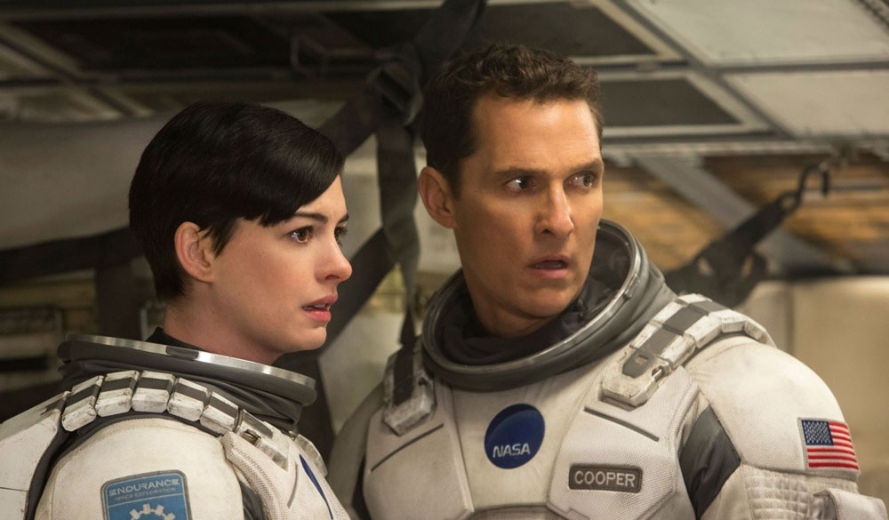

Фильмы Кристофера Нолана:
Начало
Краткое содержание фильма
Кобб – талантливый вор, лучший в опасном искусстве извлечения: он крадёт ценные секреты из глубин подсознания во время сна. Но теперь ему предстоит сделать невозможное – внедрить идею в сознание жертвы.
Кадры из фильма


| Год | 2010 |
| Страна | США, Великобритания |
| Жанр | фантастика, боевик, триллер |
| Режиссер | Кристофер Нолан |
Тёмный рыцарь
Краткое содержание фильма
Бэтмен поднимает борьбу с преступностью в Готэме на новый уровень, но на сцену выходит анархичный гений преступного мира – Джокер, который превращает город в хаос.
Кадры из фильма

| Год | 2008 |
| Страна | США, Великобритания |
| Жанр | боевик, триллер, криминал |
| Режиссер | Кристофер Нолан |
Интерстеллар
Краткое содержание фильма
Будущее Земли под угрозой, и команда исследователей отправляется за пределы нашей галактики, чтобы найти новый дом для человечества.
Кадры из фильма

| Год | 2014 |
| Страна | США, Великобритания |
| Жанр | фантастика, драма, приключения |
| Режиссер | Кристофер Нолан |